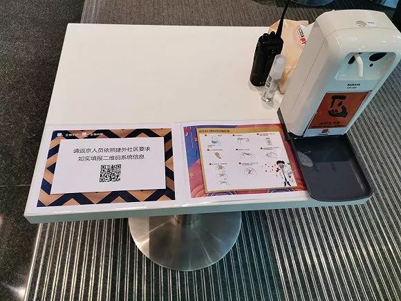

中小企业众生相：复工面临挑战，积极应对“熬过去”
原文链接 备份链接 11.02.2020本文字数：4000，阅读时长大约8分钟 导读：企业虽然很艰难，但目前要做的就是配合执行国家的各项要求，早日战胜疫情，企业能早日找到出路。 作者 | 第一财经 张苑柯 元宵节刚过，疫情之下第一批复工 …
 大望路的金地广场和写字楼加强管控。
大望路的金地广场和写字楼加强管控。
记者：孙梅欣
“
物资紧缺、人手不够，是写字楼防疫面临的难题。
”
虽然几天前公司人事部已经多次发邮件鼓励员工复工后在家上班，但正式复工的第一天，鲁媛还是选择去公司拿一些资料：“也看看公司的管控情况。”
戴上口罩、护目镜和手套，全副武装的鲁媛还是决定自驾去公司。不同于往常车位难求的公司停车场，复工第一天显得空空荡荡。
测体温、填登记表、查口罩，鲁媛进公司的流程还算顺利：“公司电梯没出现要牙签按楼层的情况，但是配上了面巾纸。”除了人少和每个人都蒙着口罩，鲁媛觉得没有太大差别。
尽管如此，她也不敢在办公室久留，处理完工作后便迅速离开。除了担心中央空调这一可能的传播渠道，鲁媛说，按照规定，在公司最长停留时间不得超过4个小时。
“和春节假期相比，复工第一天，管辖的物业楼内人员数量明显增加。”世邦魏理仕（CBRE)华北区不动产管理部主管周业辉表示，这是根据楼宇物业人员针对进入人员的测温量做出的统计：“但和往年春节复工后的人数相比，现在回办公楼的人员比例只有正常时期的20%-25%。大部分企业还是选择这一周先在家办公。”
北京核心区超甲级写字楼的企业复工比例相对较低。“以我们在金融街管理的项目为例，复工率大约30%左右。”周业辉观察到，反而在非核心区，例如酒仙桥、北四环等区域的写字楼里，中小型企业的复工数量更多一些。
位于北京大望路的金地中心，其物业负责人刘晓薇表示，复工首日，进出写字楼的人员数量比早前摸底的情况要少很多：“摸底时有50家企业表示想复工，预计1000人进出。但第一天实际上进入大楼的人员只有400人，不到总员工数量的10%，复工企业也只有35家，只占总企业数量的40%。”
为了尽可能的减少人员聚集，复工前金地中心就动员入驻企业错峰上下班。“在写字楼和商场的进出口处都设有测温点，而且每个人都要保持1米以上的距离。”刘晓薇表示，对于电梯的乘坐人数也有着严格限制，每个轿厢最多只能乘坐6人：“但实际操作来看，大部分进楼的人员也很有防范意识，电梯站了2、3个人就选择等下一趟。”
由于地处地铁换乘和商业核心区，为了避免出现管控盲点，金地广场联合北京地铁部门，关闭了商场连接地铁的进出口，整个写字楼和商业部分只保留了3个进出口，便于人员管控。
金茂物业则在中化大厦、凯晨世茂中心门口放上了各类标识牌，包括“口罩指定投放”、“清杀清洁”、“询问登记”等等，在进入楼宇前就进行警示。
金茂物业的工作人员在对写字楼门前的地垫进行消杀。
测温、检查戴口罩、进楼登记，对于写字楼内已经复工的企业，这是大部分物业最基础的防控流程。另外，不少物业单位在大堂或者进出口都提供了免洗洗手液，或者酒精消毒。门前的地垫每定期用84消毒液进行消毒，以降低外部的病毒病菌进入楼宇的可能。”
周业辉表示，世邦魏理仕针对负责的楼宇物业，要求电梯箱体、按钮、公共办公区域，都保持2小时消毒一次的频率，下水、地漏等细节处进行彻底消毒。
针对中央空调这一潜在“威胁”，各物业都转为了新风系统，并定期进行消杀。
金地中心在物业进行消杀的同时，要求入驻企业在各自的进风口，定期喷洒消毒水。金茂物业对中央空调进行定期消杀的同时，启用正压新风系统，将室外空气加压及预处理后送送入室内，避免出现室内空气的回风循环。
在吃饭问题上，各物业也尽可能严防死守。
弘阳地产位于上海总部的办公楼里，错峰吃饭的员工每人独自占据一张桌子吃饭，并且保持着2米左右的距离。有员工感叹，把午饭吃出了考场的庄严感。
不同于封闭式的企业办公楼食堂，金地广场的餐饮区“大食代”承担了商场人流和写字楼人员两部分的餐饮需求。“这部分餐饮区目前还在营业，但是桌椅重新进行了布置，一个桌子只配一把椅子，桌子之间也只留了对角线的空位，保证食客间隔用餐。”刘晓薇介绍，针对写字楼租户，也动员企业鼓励员工自行带餐。

金地广场和金地中心的出入口都设有测温点和登记处。
周业辉则表示，针对有食堂的楼宇，餐厅采用送餐制，由物业给每个员工送到工位上，避免可能存在的交叉传染。
由于有着17年前北京抗击非典的经验，因此在肺炎疫情的消息传来之后，周业辉和同事在春节前便开始做准备：一是物资采购，一是人员动员：“物业存在大量的外包人员，所以春节前就跟外包公司动员，希望一些保洁、保安等后勤人员能够春节不离京。”因此，目前所有物业上的工作人员，在春节期间均未离开北京：“既避免了输入传染的风险，也免去了返京的隔离时间。“
金茂物业要求物业人员每天实施两次体温检测，并对备勤住宿人员进行集中管理，严格控制出入，以避免物业员工中出现疫情。
不过，随着“云办公”时间逐渐结束、人员陆续返回写字楼的情况，物资和工作人员配比，是物业管理人员担忧的重点。
周业辉表示，虽然春节前就抢定了一批包括防护服、口罩、护目镜等在内的防护物资，但由于消耗极大，因此能支撑的时间最长也只有1个月。虽然后续物资也在订购，但各行业都面临物资短缺的问题，是否能跟得上还是个问题。
另外，尽管及早动员留下了一批物业工作人员，但和正常运转时期相比，现在的人员配比只有平时的70%，每栋楼宇目前都采用维持楼宇运转的基本保障人数去配备。
“但是随着写字楼复工人员逐渐增多，这批人手工作量会面临较大压力的问题。如果离京人员还面临封村、封城、返程隔离的问题，人手不够会是很大的问题。”周业辉说。
金茂和金地的物业人员也表达出类似的忧虑。刘晓薇表示，根据对客户的摸底调研，正式复工预计还有本月的17日、23日，以及3月的几个节点，随着人员进入越来越多，担心楼内的管控压力会越来越大。
金茂物业负责人也表示，由于很多物业员工春节期间就在岗，加上复工后的工作强度，一线员工也会存在过度疲劳、免疫力下降的情况。
而对于写字楼行业而言，目前最担忧的问题，莫过于返工后可能出现的疑似及确证病例。
中指控股副总裁兼中指数据事业部总经理葛海峰在早前的商办分析会上表示，如果一旦楼内出现疫情，不论商户还是业主，都会面临巨大影响：“疫情一旦出现就会封楼，那么楼内的其他租户是否有权利提出免租要求？导致其他租户经营产生的停顿和阻碍怎么解决？这会产生一系列的法律问题。”因此他认为，即便企业陆续复工，防疫仍是首要工作。
(文中鲁媛为化名）
未经授权 禁止转载

原文链接 备份链接 11.02.2020本文字数：4000，阅读时长大约8分钟 导读：企业虽然很艰难，但目前要做的就是配合执行国家的各项要求，早日战胜疫情，企业能早日找到出路。 作者 | 第一财经 张苑柯 元宵节刚过，疫情之下第一批复工 …
原文链接 备份链接 实际上，我就是个做KTV的没有文化的土鳖小老板。 我觉得各地帮助中小微企业的政策没有太大的蛋用，反正根据这个政策我们还是死路一条。 所以，我尝试根据自己企业情况指出了问题，也提了些建议，供参考！ 免责申明： 也许我理解 …
原文链接 备份链接 北京远洋未来汇7-11店。图片来自赵晓娟 记者：赵晓娟 编辑：昝慧昉 “ 复工率不足、复工员工减少外出等因素，都影响了交易量。 ” 节后上班第一天，依赖写字楼员工消费的便利店生意依然很冷清。 2月10日11点40分 …
原文链接 备份链接 _ 2月10日这个周一，中国多个省市迎来了春节后第一个工作日，虽然比原定假期已推迟一周，但政府、企业和个人所面临的疫情防控压力都不小。当前，湖北省仍需要着力抓好疫情防控，其他地区也需要做好防控的同时有序恢复生产 _ …
原文链接 备份链接 经济观察报 记者 种昂 2月4日，一批5万只口罩由一辆货车缓缓运进了江苏某汽车配件工厂的大门，刘天元总算松了一口气。作为这家民企高管兼内部疫情防控的副总指挥，他肩负着企业复工的重担。此时，刘天元似乎看到了复工的希望。 …